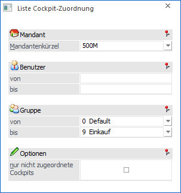
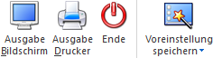

Durch die Anwahl des Buttons "Liste Cockpit-Zuordnung" im Programm "Cockpit-Zuordnung" kann eine Liste der Zuordnungen am Bildschirm ausgegeben werden.
Hinweis
Welche Cockpit-Zuordnungen ausgewertet werden ist abhängig davon, über welche Applikation (WinLine START oder WinLine INFO) die Cockpit-Zuordnung aufgerufen wurde.

Ø Mandantenkürzel
An dieser Stelle kann ein Mandant ausgewählt werden, für welchen die Zuordnungen ausgegeben werden sollen. Mit Hilfe des Eintrags "Alle" können alle Mandanten berücksichtigt werden.
Ø Benutzer von / bis
An dieser Stelle können die Benutzer ausgewählt werden, für welche die Zuordnungen ausgegeben werden sollen.
Ø Gruppe von / bis
An dieser Stelle können die Benutzergruppen ausgewählt werden, für welche die Zuordnungen ausgegeben werden sollen.
Ø nur nicht zugeordnete Cockpits
Durch Aktivierung dieser Option kann eine Liste alle Cockpits ausgegeben werden, welche nicht zugeordnet wurden.
Buttons

Ø Ausgabe Bildschirm
Mit Hilfe des Buttons "Ausgabe Bildschirm" oder der Taste F5 wird die Auswertung am Bildschirm ausgegeben.
Ø Ausgabe Drucker
Durch Anwahl des Buttons "Ausgabe Drucker" wird die Auswertung am Drucker ausgegeben.
Ø Ende
Mit Hilfe des Buttons "Ende" bzw. der Taste ESC wird das Fenster geschlossen.
Ø Voreinstellung speichern
Durch Anwahl dieses Buttons erfolgt eine benutzerspezifische Speicherung aller im Fenster getätigten Einstellungen. Diese sogenannten "Voreinstellungen" können jederzeit wieder abgerufen werden und ermöglichen dadurch ein schnelleres und zielorientierteres Arbeiten (nähere Informationen entnehmen Sie bitte dem Kapitel "Die Voreinstellungen").